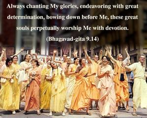
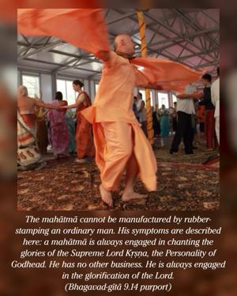
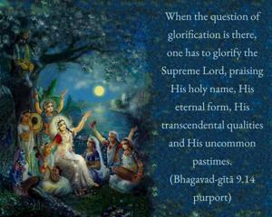
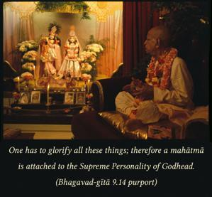

Always chanting My glories, endeavoring with great determination, bowing down before Me, these great souls perpetually worship Me with devotion.




The mahātmā cannot be manufactured by rubber-stamping an ordinary man. His symptoms are described here: a mahātmā is always engaged in chanting the glories of the Supreme Lord Kṛṣṇa, the Personality of Godhead. He has no other business. He is always engaged in the glorification of the Lord. In other words, he is not an impersonalist. When the question of glorification is there, one has to glorify the Supreme Lord, praising His holy name, His eternal form, His transcendental qualities and His uncommon pastimes. One has to glorify all these things; therefore a mahātmā is attached to the Supreme Personality of Godhead.
One who is attached to the impersonal feature of the Supreme Lord, the brahma-jyotir, is not described as mahātmā in the Bhagavad-gītā. He is described in a different way in the next verse. The mahātmā is always engaged in different activities of devotional service, as described in the Śrīmad-Bhāgavatam, hearing and chanting about Viṣṇu, not a demigod or human being. That is devotion: śravaṇaṁ kīrtanaṁ viṣṇoḥ and smaraṇam, remembering Him. Such a mahātmā has firm determination to achieve at the ultimate end the association of the Supreme Lord in any one of the five transcendental rasas. To achieve that success, he engages all activities – mental, bodily and vocal, everything – in the service of the Supreme Lord, Śrī Kṛṣṇa. That is called full Kṛṣṇa consciousness.
In devotional service there are certain activities which are called determined, such as fasting on certain days, like the eleventh day of the moon, Ekādaśī, and on the appearance day of the Lord. All these rules and regulations are offered by the great ācāryas for those who are actually interested in getting admission into the association of the Supreme Personality of Godhead in the transcendental world. The mahātmās, great souls, strictly observe all these rules and regulations, and therefore they are sure to achieve the desired result.
As described in the second verse of this chapter, not only is this devotional service easy, but it can be performed in a happy mood. One does not need to undergo any severe penance and austerity. He can live this life in devotional service, guided by an expert spiritual master, and in any position, either as a householder or a sannyāsī or a brahmacārī; in any position and anywhere in the world, he can perform this devotional service to the Supreme Personality of Godhead and thus become actually mahātmā, a great soul.